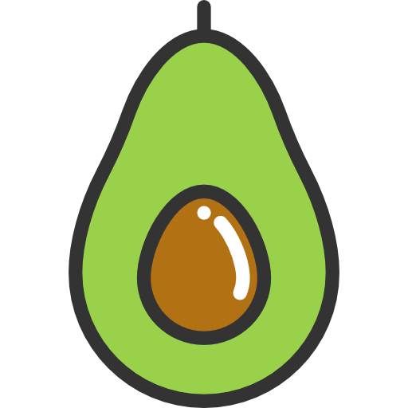
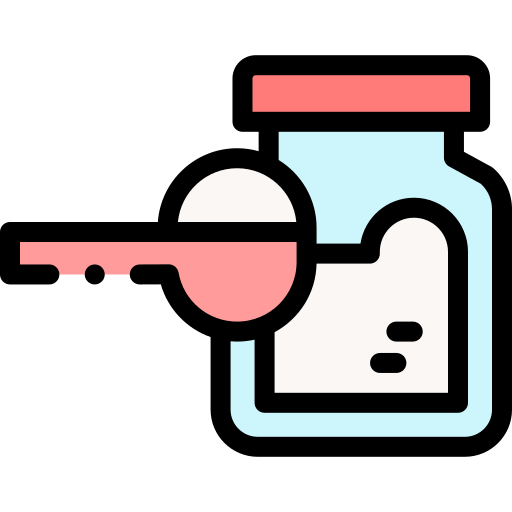

Que es la dieta keto?
El término dieta keto hace referencia a la dieta cetogénica. La dieta cetogénica es un plan de alimentación bajo en hidratos de carbono y rico en grasas.
Esta dieta implica reducir los carbohidratos de forma drástica y reemplazarlos por grasas. Esta disminución expone al cuerpo a un estado metabólico llamado cetosis.
Cuando ocurre esto, el cuerpo se vuelve increíblemente eficiente y consigue convertir toda la grasa en energía. También convierte la grasa en cetonas dentro del hígado, lo que puede suministrar más energía al cerebro.
Las dietas cetogénicas reducen el azúcar de la sangre y los niveles de insulina. Esto, junto al incremento de cetonas, proporciona numerosos beneficios para la salud.
La cetosis en sangre, un estado metabólico parecido al ayuno intermitente, otra de las tendencias más en boga en cuestiones de nutrición.
Puedes aprender rápidamente los conceptos básicos detrás de la dieta keto con este curso en vídeo:
Video explicativo
Como Alimentarse
-
Proteinas
Un consumo alto de proteínas demostró conservar la masa muscular, mejorar la composición corporal y proporcionar otros beneficios para la salud.
ver + -

Grasas Saludables
La grasa es uno de los tres macronutrientes que se encuentran en la comida. En una dieta cetogenica o baja em carbohidratos, la grasa es la principal fuente de energia.
ver + -
Vegetales
Los vegetales cumplen un papel mmuy importante en la dieta keto. Ademas de contar con pocas calorias, los vegetales estos aportan al cuerpo minerales, vitaminas y fibra.
ver +
-

Azucar
Con la insulina baja, tu cuerpo puede acceder a la grasa almacenada para obtener energia. Por el contrario, comer azucar eleva los niveles de insulina e inhibe la quema de grasa.
ver + -
Gluten
Es posible que encuentres muchos beneficios al consumir alimentos libres de gluten, como mejorar la salud metabolica, perder peso, tener mayot energia y sentirte mejor.
ver + -
Aceites Vegetales
No es recomendado el consumo de aceites vegetales, ya que contienen muchas cantidades de omega 6. Este puede llegar a causar una inflamacion dentro de nuestro organismo.
ver +
Beneficios
Promueve la quema de grasas
La fuente principal de energía del organismo es la glucosa. Al limitarse la ingesta de hidratos de carbono (los responsables de la generación de glucosa) el cuerpo se ve obligado a buscar una fuente alternativa de energía y recurre a las grasas. Este proceso, conocido como cetosis, es el responsable de la quema de grasa y de la consecuente pérdida de peso entre los seguidores de la dieta keto.
Reduce el hambre
Los alimentos con un alto índice glucémico generan una sensación saciante que apenas dura unos minutos. Tras alcanzar el pico de glucosa, disminuye la energía y vuelve a aparecer la sensación de hambre. Al eliminarse los hidratos de carbono y los azúcares de asimilación rápida desaparece esa sensación de hambre.
Mejora la concentración, la agudeza mental y la memoria
A diferencia de lo que ocurre en las dietas en las que el cuerpo recurre al azúcar como fuente principal de energía, en la dieta cetogénica no se producen altibajos de rendimiento en función de los picos de glucosa.
Mejora la resistencia física
La presencia de un flujo constante de energía también se traduce en un incremento de la resistencia física.
Reduce las inflamaciones
Otro beneficio de la dieta keto es que es mucho más rica en alimentos con un alto porcentaje de Omega 3 que otras dietas. Un ácido graso presente en el aceite de oliva, el pescado azul, las semillas, los frutos secos, las verduras de verdes y otros alimentos con grandes propiedades antiinflamatorias.
Previene el desarrollo de enfermedades crónicas
Desterrar el azúcar de la dieta ofrece muchas ventajas. Según se desprende de diferentes investigaciones científicas, suprimir o minimizar al máximo este disacárido reduce exponencialmente la posibilidad de desarrollar enfermedades como el alzhéimer, la diabetes, la esclerosis múltiple, la epilepsia, la obesidad y algunos tipos de carcinomas.